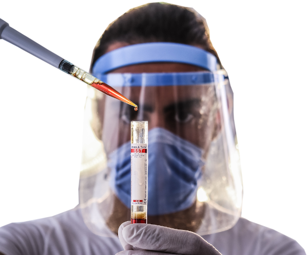

Nossa história
O Laboratório Generations foi fundado em 2011 pelos irmãos Dr. Fulano da Silva e Dra. Ciclana da Silva. Naturais de Tagamandapio no interior do estado de São Paulo, desde de crianças se interessavam por ciências naturais e com naturalidade traçaram o caminho da pesquisa, para ser mais exato a pesquisa genérica.
Ambos se graduaram no curso de Bacharel em Ciências Biológicas da Universidade de São Paulo - USP com honras, sendo indicados a realizarem o mestrado na tão renomada Universidade de Haward, nos Estados Unidos, com enfâse na análise sanguínea de humanos e animais para traçar seus ancestrais e antepassados.
Após retornarem ao Brasil, foi percebido por ambos, o grande aumento nas buscas por testes de ancestralidade por pessoas que na grande maioria desejavam conhecer suas origens e ter como prová-las em um processo ou dossiê de cidadania européia. Como tinham um vasto conhecimento neste campo de atuação (Análise de Ancestralidade) decidiram criar o Laboratório Generations.
Com o passar dos anos nosso laboratório se aperfeiçoou, credenciou e ampliou a gama de serviços prestatos especificamente no campo da Genética. Para saber mais entre em contato conosco.
